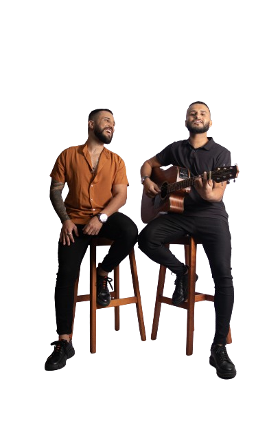
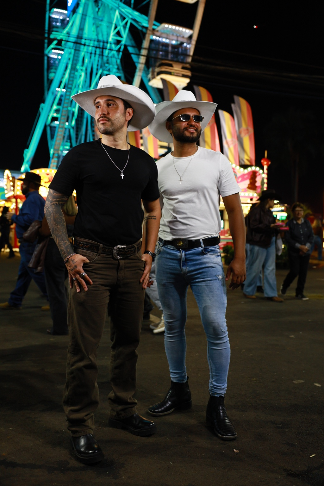

FORMATO 01 · PROXIMIDADE & SENTIMENTO
Acústico
Premium.
Voz, violão e sanfona. Uma formação que aproxima a dupla do público e deixa cada canção falar mais alto.
- Voz
- Violão
- Sanfona

A PROPOSTA
O essencial também emociona.
No Acústico Premium, as vozes de Caíque & Calegari encontram a sonoridade do violão e da sanfona. Uma proposta de atmosfera acolhedora, em que a interpretação e o sentimento das músicas ficam em primeiro plano.
Para quem imagina um encontro mais próximo, esta formação traz a identidade sertaneja da dupla em uma experiência intimista. É um ponto de partida para pensar a trilha sonora do seu evento junto com a equipe.
EM IMAGENS
Conheça a dupla.
Fotos de divulgação de Caíque & Calegari para conhecer os artistas por trás do show.

DÊ O PLAY
O som da nossa história.
Vídeos oficiais para conhecer o trabalho da dupla. Os registros são uma apresentação geral do trabalho da dupla.
Do palco para você
Assistir Do palco para você no YouTube ↗VAMOS CONVERSAR?
Leve o Acústico Premium
para o seu evento.
Conte a data, a cidade e como você imagina esse encontro. A equipe vai conversar com você sobre disponibilidade, estrutura e orçamento para esta formação.
Tenho interesse · WhatsAppA mensagem já vai com o formato escolhido. A contratação depende de disponibilidade e alinhamento com a equipe.
ESCOLHA O SEU ENCONTRO